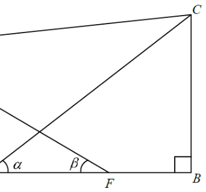

Topic 13 · Trigonometry — “Which of the following must be true?”
Scroll the solution on the right — the diagram highlights each step automatically.
In the figure, \(ABCD\) is a trapezium with \(\angle ABC=\angle BAD=90^\circ\). \(E\) and \(F\) are points lying on \(AB\) such that \(E\) and \(F\) divide \(AB\) into three equal parts. Which of the following must be true?
I. \(AF\sin\alpha = BE\sin\beta\)
II. \(CE\cos\alpha = DF\cos\beta\)
III. \(AD\tan\alpha = BC\tan\beta\)

\(E\) and \(F\) divide \(AB\) into three equal parts, so if \(AE=EF=FB=x\), then:
\[AF = AE+EF = 2x,\qquad BE = EF+FB = 2x\]
Thus \(\;\boxed{AF = BE = 2x\;}\) — a key relation used in all three statements.
In the right triangles with base on \(AB\), angle \(\alpha\) is at \(E\) (in \(\triangle BCE\)) and angle \(\beta\) is at \(F\) (in \(\triangle ADF\)).
Vertical sides give: \[\tan\alpha=\frac{BC}{BE},\qquad \tan\beta=\frac{AD}{AF}\]
Also \(\sin\alpha=\dfrac{BC}{CE},\;\cos\alpha=\dfrac{BE}{CE}\) and \(\sin\beta=\dfrac{AD}{DF},\;\cos\beta=\dfrac{AF}{DF}\).
Statement I claims \(AF\sin\alpha = BE\sin\beta\). Substituting:
\[AF\cdot\frac{BC}{CE} \;\overset{?}{=}\; BE\cdot\frac{AD}{DF}\]
Using \(AF=BE\) and the \(\tan\) relations \(BC=BE\tan\alpha,\;AD=AF\tan\beta\), this becomes an identity only when \(\alpha=\beta\) (since then \(CE=DF\)).
✘ In general \(BC\neq AD\), so \(\alpha\neq\beta\) and the equality fails. Statement I is NOT always true.
Statement II claims \(CE\cos\alpha = DF\cos\beta\). Using \(\cos\alpha=\dfrac{BE}{CE}\):
\[CE\cdot\frac{BE}{CE}=BE,\qquad DF\cdot\frac{AF}{DF}=AF\]
Since \(BE=AF\) from Step 1: \[CE\cos\alpha = AF = BE = DF\cos\beta\]
✔ Statement II is always true — it reduces to \(BE=AF\).
Statement III claims \(AD\tan\alpha = BC\tan\beta\). Recall \(\tan\alpha=\dfrac{BC}{BE}\) and \(\tan\beta=\dfrac{AD}{AF}\):
\[AD\tan\alpha = AD\cdot\frac{BC}{BE},\qquad BC\tan\beta = BC\cdot\frac{AD}{AF}\]
Since \(BE=AF\), the two expressions are equal: \[AD\tan\alpha = \frac{AD\cdot BC}{BE} = \frac{AD\cdot BC}{AF} = BC\tan\beta\]
✔ Statement III is always true.
Conclusion
Only statements II and III must be true.
Answer: C (II and III only)
Question. \\(ABCD\\) is a trapezium with \\(\angle ABC=\angle BAD=90^\circ\\). \\(E\\) and \\(F\\) on \\(AB\\) divide it into three equal parts with \\(AE=EF=FB=4\\) cm. It is given that \\(BC=6\\) cm and \\(AD=9\\) cm, \\(\alpha=\angle BEC\\) and \\(\beta=\angle AFD\\).
(a) Find \\(\tan\alpha\\) and \\(\tan\beta\\).
(b) Show that \\(CE\cos\alpha=DF\cos\beta\\).